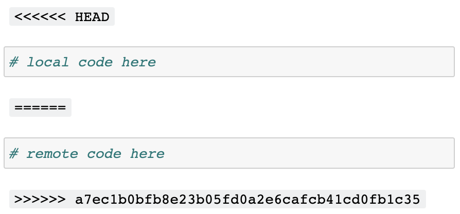

pwd/private/var/folders/ft/0gnvc3ts5jz4ddqtttp6tjvm0000gn/T/tmpez8nec5v/repoVersion control is essential to developing software, yet Jupyter notebooks don’t work with version control by default. nbdev solves this problem! It provides a set of hooks which enable git-friendly Jupyter notebooks in any git repo, including those that don’t use the broader nbdev system.
To get started, install nbdev:
pip install -U nbdevconda install -c fastai nbdevthen install hooks:
nbdev_install_hooksThat’s it! Read on if you’re stuck or if you’d like to learn more about nbdev hooks and how to customise them. Check out our related blog post if you’re curious about how this feature was developed and how it works under the hood.
The clean hook currently only supports Jupyter Notebook and Jupyter Lab. If you’re using another notebook editor, like VSCode or PyCharm, you might want to use nbdev’s pre-commit hooks.
To start with, change directory to your current project and double-check. Don’t worry about the strange path, that’s because we’re using a temporary directory for this tutorial:
pwd/private/var/folders/ft/0gnvc3ts5jz4ddqtttp6tjvm0000gn/T/tmpez8nec5v/repoInstall nbdev:
pip install -Uqq nbdevInstall nbdev hooks:
nbdev_install_hooksNot in a git repository, git hooks cannot be installed.You’ll see the above error if you’re not in a git repo. If so, initialise a git repository:
git initInitialized empty Git repository in /private/var/folders/ft/0gnvc3ts5jz4ddqtttp6tjvm0000gn/T/tmpez8nec5v/repo/.git/Then try installing nbdev hooks again:
nbdev_install_hooksHooks are installed.If you already have a pre-save hook set in your Jupyter config file we won’t be able to safely install a new one automatically. Instead, you’ll encounter an error and will need to follow its instructions for a manual installation.
Jupyter hooks will now be installed in your user’s Jupyter config directory, and will work for all repos by default. Git hooks will only be installed in the current repo; you will need to rerun nbdev_install_hooks for each of your git repos. See configuring nbdev hooks if you’d like to customise hook behaviour, for example, to opt out of hooks in certain repos.
nbdev provides three hooks to ease Jupyter-git integration.
nbdev_merge on merging notebooks with gitOne of the biggest complaints when working with Jupyter is that merge conflicts break notebooks. This is particularly problematic in projects with many collaborators.

Oftentimes these conflicts are on metadata like cell execution counts that we don’t really care about. nbdev comes with a custom git merge driver that automatically fixes conflicting outputs and metadata, and that leaves remaining conflicts in a state that still works with Jupyter. It works in all git commands that use merge under the hood, including merge, pull, rebase, and stash.
Here’s what the conflict looks like in Jupyter with nbdev’s merge driver:

nbdev_clean on saving notebooks in JupyterJupyter notebooks store a variety of metadata (including execution counts and notebook extension info) that aren’t conducive to collaborative version control systems like git. These pollute diffs in pull requests and git histories (which can make debugging harder), and tend to cause merge conflicts. For example:
{
"cell_type": "code",
- "execution_count": 1,
+ "execution_count": 2,
"metadata": {
"hide_input": false
}Python’s default repr is another example, since it includes a memory address which we usually aren’t interested in:
-<matplotlib.axes._subplots.AxesSubplot at 0x7fbc11508950>
+<matplotlib.axes._subplots.AxesSubplot at 0x7fbc113dbe90>nbdev install a Jupyter hook which runs nbdev_clean to automatically clean unwanted metadata and outputs from your notebooks, including ids from default Python reprs! With nbdev hooks, the examples above would become:
{
"cell_type": "code",
"execution_count": null,
"metadata": {}
}and
<matplotlib.axes._subplots.AxesSubplot>nbdev_trust after merging notebooks with gitA side-effect of Jupyter’s security model is that widgets don’t work in collaborative repos, unless you manually “trust” notebooks after each git pull. There is a good reason behind this: since Jupyter notebooks contain HTML and JavaScript, the trust system avoids running malicious code when you open a notebook and don’t explicitly run any cells. See the official documentation for more.
Manually trusting notebooks each time is a pain. A more natural workflow would be trust a repo once-off, and all notebooks and changes thereafter. nbdev includes a git post-merge hook which runs nbdev_trust in your repo to do exactly this.
The most up-to-date reference of nbdev’s settings is in the nbdev_create_config docs. In addition, this section will guide you through a few common configurations.
Control whether Jupyter hooks are run:
jupyter_hooks = True in user settingsjupyter_hooks = False in user settings (at ~/.config/nbdev/settings.ini)jupyter_hooks = False in user settings and jupyter_hooks = True in selected repo settingsCustomise notebook cleaning with the following settings:
clear_allallowed_metadata_keys and allowed_cell_metadata_keysids from default Python reprs: clean_idsAll of the above can be customised per-user and per-repo.
Control whether git hooks are run:
Since git hooks are installed per-repo they’ll only run in repos where you manually nbdev_install_hooks. If you change your mind later, you can uninstall git hooks by following the instructions in the .gitconfig file created in your repo.